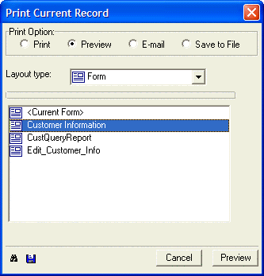
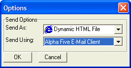
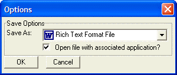

Print Current Record Dialog Box
Select one of the four radio buttons in the Print Option group.
Select the Layout type. There are five options.
- Report"
- "Label"
- "Letter"
- "Form"
- "Browse"
Select a layout from the list.
Optionally, click the
 button to view the Xbasic code generated by this
action.
button to view the Xbasic code generated by this
action.Optionally, click the
 button to save these settings for the next time you
run this action.
button to save these settings for the next time you
run this action.

If you selected "Print" in the Print Option group, click Print.
If you selected "Preview" in the Print Option group, click Preview.
If you selected "Email" in the Print Option group, optionally click Send Options.
Select the type of data you are sending from the Send As list. There are four options:
"Adobe Acrobat PDF File". Can be displayed with Adobe Acrobat Reader.
"Dynamic HTML File". Can be displayed with a browser.
"Rich Text Format File". Can be displayed with Microsoft Word or Microsoft Wordpad.
"Plain Text File". Can be displayed with Microsoft Notepad and many other text editors.
Select the email client you would like to use from the Sending Using list.
Click OK to continue or Cancel to discard your selections.
Click Send.

If you selected "Save to File" in the Print Option group, optionally click Save Options.
Select the type of data you are sending from the Send As list. There are four options:
"Adobe Acrobat PDF File". Can be displayed with Adobe Acrobat Reader.
"Dynamic HTML File". Can be displayed with a browser.
"Rich Text Format File". Can be displayed with Microsoft Word or Microsoft Wordpad.
"Plain Text File". Can be displayed with Microsoft Notepad and many other text editors.
Optionally, check the Open file with associated application? check box. This specifies whether Alpha Five should open the file with its associated application once it is created.
Click OK to continue or Cancel to discard your selections.
Click Save.
